Step 1
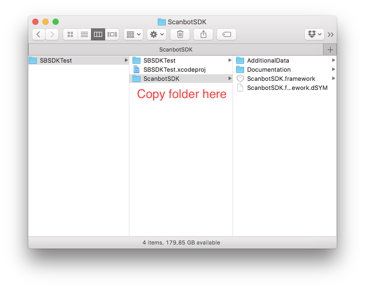
Copy ScanbotSDK folder into your apps project folder
Step 2
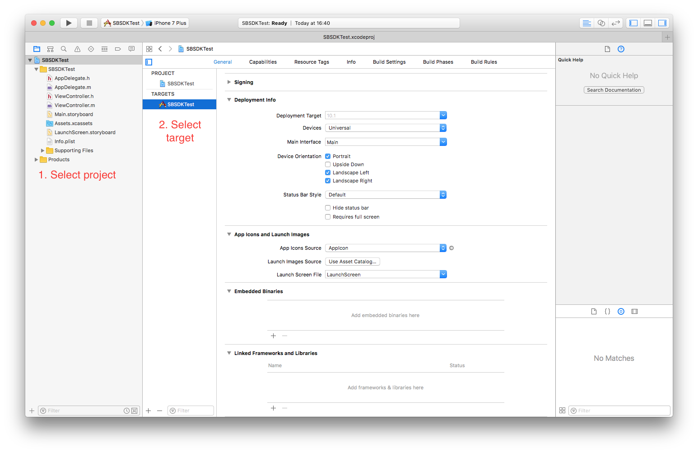
Open your app project in Xcode
Step 3
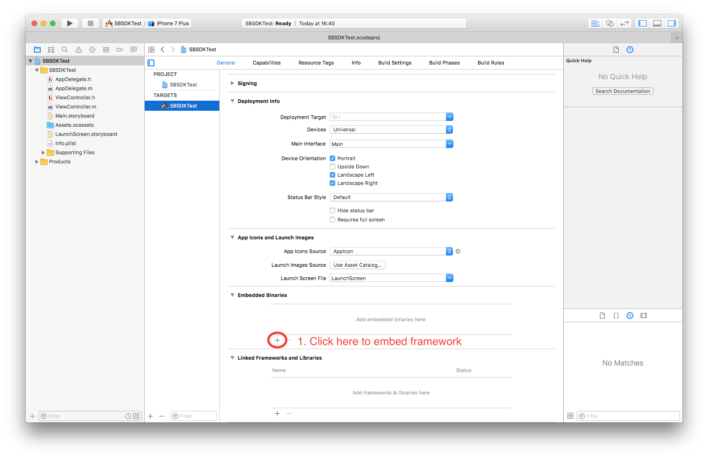
Select your apps build target and add an embedded framework
Step 4
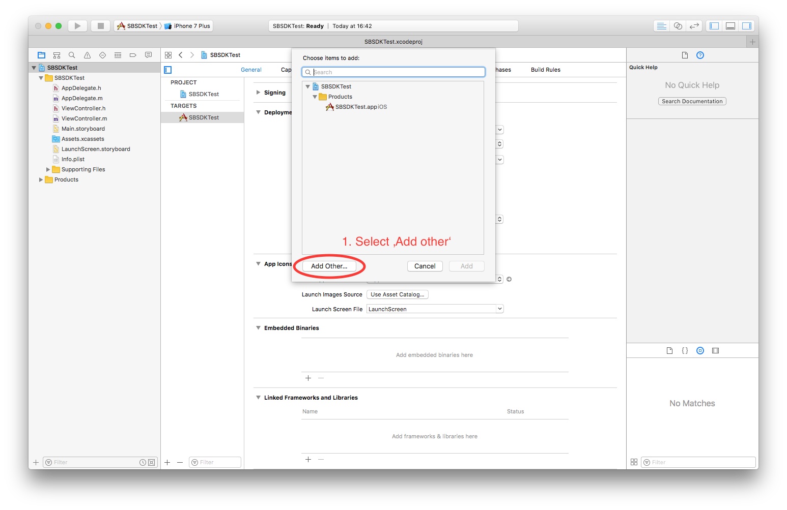
Select 'Add Other...'
Step 5
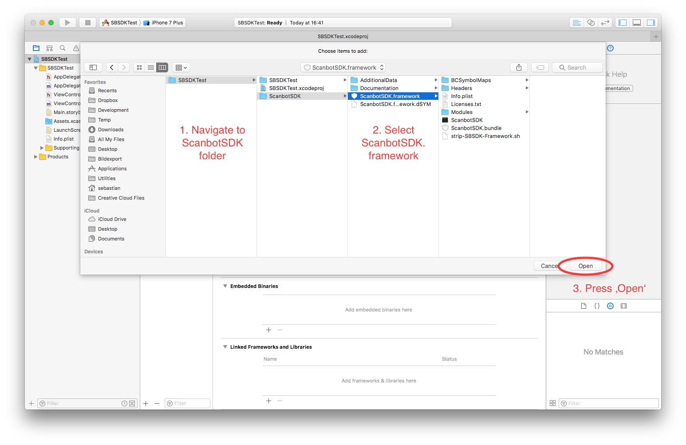
Locate and select ScanbotSDK.framework
Step 6
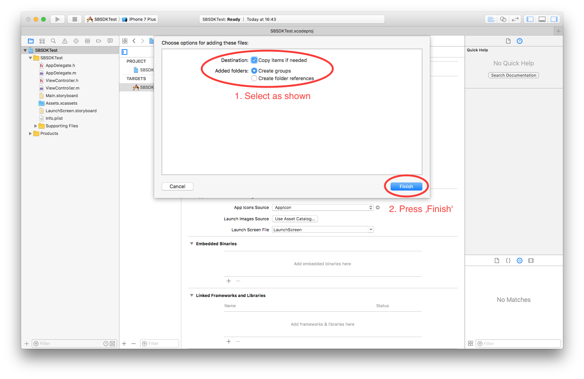
Check 'Copy items if needed' and 'Create groups' and hit 'Finish'
Step 7
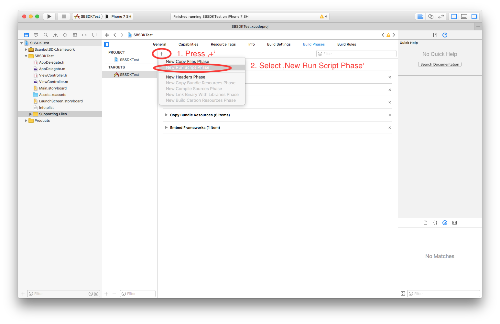
Add a runscript build phase
Step 8
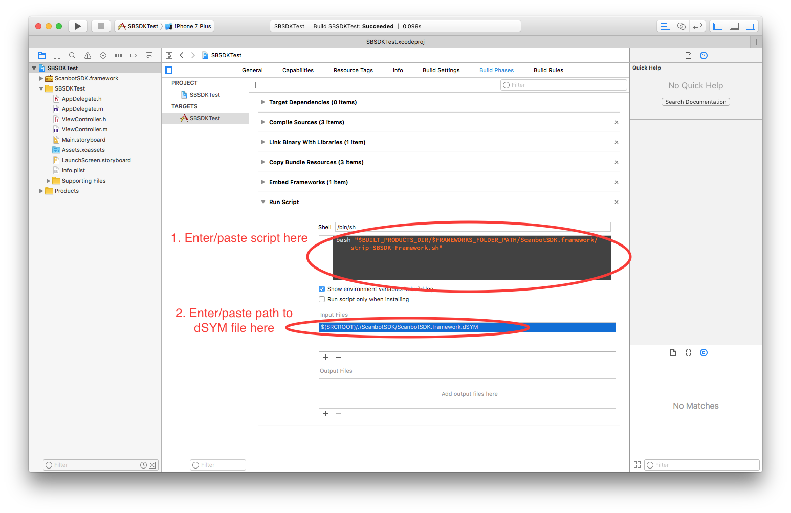
Configure the runscript build phase
Script code:
bash "$BUILT_PRODUCTS_DIR/$FRAMEWORKS_FOLDER_PATH/ScanbotSDK.framework/strip-SBSDK-Framework.sh"
Script input file:
$(SRCROOT)/./ScanbotSDK/ScanbotSDK.framework.dSYM
Step 9
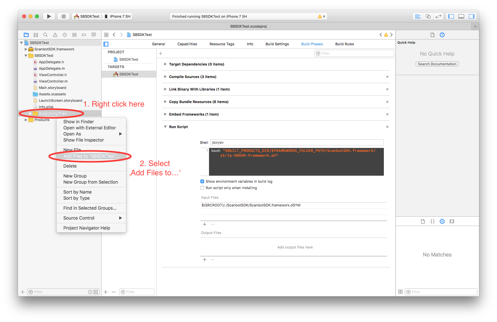
Optional - Add the data bundles for invoice and credit card recognition to your project
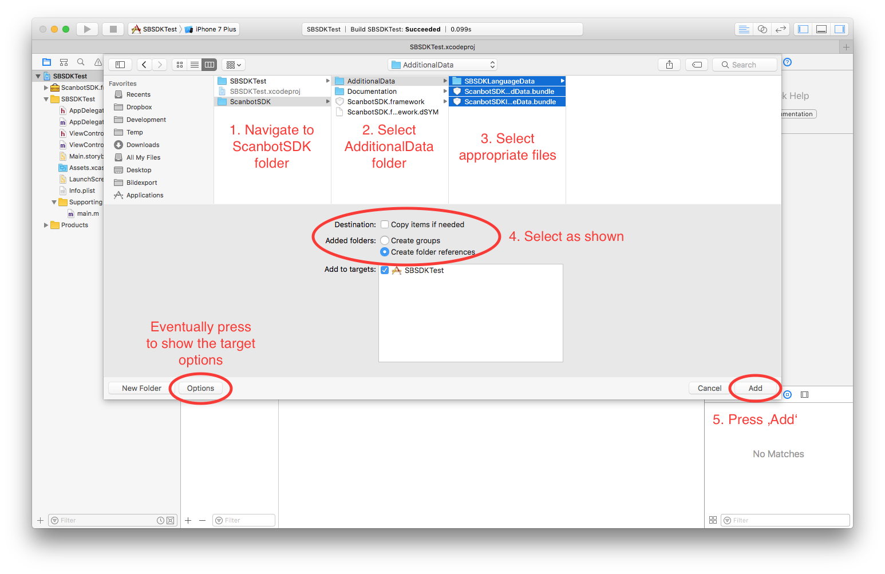
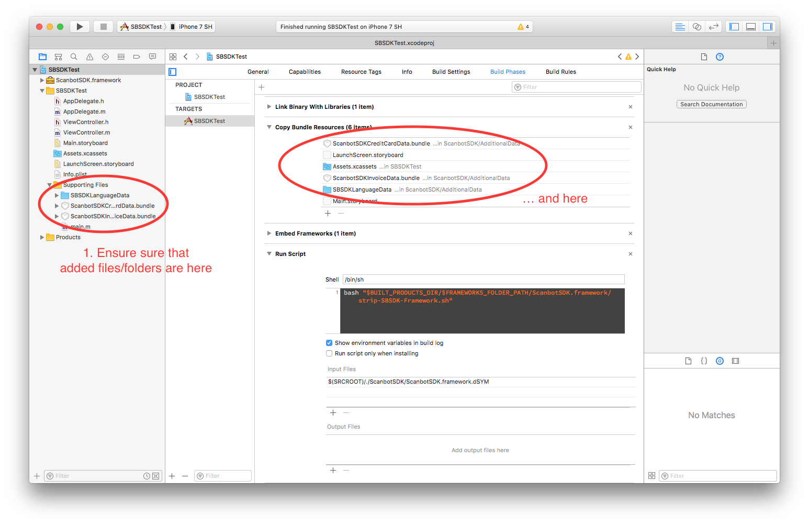